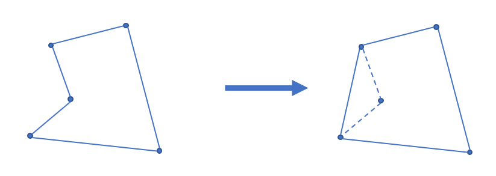

凸包
二维凸包
凸多边形
凸多边形是指所有内角大小都在
凸包
在平面上能包含所有给定点的最小凸多边形叫做凸包。
其定义为：对于给定集合
实际上可以理解为用一个橡皮筋包含住所有给定点的形态。
凸包用最小的周长围住了给定的所有点。如果一个凹多边形围住了所有的点，它的周长一定不是最小，如下图。根据三角不等式，凸多边形在周长上一定是最优的。

凸包的求法
常用的求法有 Graham 扫描法和 Andrew 算法，这里主要介绍 Andrew 算法。
Andrew 算法求凸包
该算法的时间复杂度为
首先把所有点以横坐标为第一关键字，纵坐标为第二关键字排序。
显然排序后最小的元素和最大的元素一定在凸包上。而且因为是凸多边形，我们如果从一个点出发逆时针走，轨迹总是“左拐”的，一旦出现右拐，就说明这一段不在凸包上。因此我们可以用一个单调栈来维护上下凸壳。
因为从左向右看，上下凸壳所旋转的方向不同，为了让单调栈起作用，我们首先 升序枚举 求出下凸壳，然后 降序 求出上凸壳。
求凸壳时，一旦发现即将进栈的点（
通常情况下不需要保留位于凸包边上的点，因此上面一段中
代码实现
// C++ Version
// stk[] 是整型，存的是下标
// p[] 存储向量或点
tp = 0; // 初始化栈
std::sort(p + 1, p + 1 + n); // 对点进行排序
stk[++tp] = 1;
// 栈内添加第一个元素，且不更新 used，使得 1 在最后封闭凸包时也对单调栈更新
for (int i = 2; i <= n; ++i) {
while (tp >= 2 // 下一行 * 操作符被重载为叉积
&& (p[stk[tp]] - p[stk[tp - 1]]) * (p[i] - p[stk[tp]]) <= 0)
used[stk[tp--]] = 0;
used[i] = 1; // used 表示在凸壳上
stk[++tp] = i;
}
int tmp = tp; // tmp 表示下凸壳大小
for (int i = n - 1; i > 0; --i)
if (!used[i]) {
// ↓求上凸壳时不影响下凸壳
while (tp > tmp && (p[stk[tp]] - p[stk[tp - 1]]) * (p[i] - p[stk[tp]]) <= 0)
used[stk[tp--]] = 0;
used[i] = 1;
stk[++tp] = i;
}
for (int i = 1; i <= tp; ++i) // 复制到新数组中去
h[i] = p[stk[i]];
int ans = tp - 1;
# Python Version
stk = [] # 是整型，存的是下标
p = [] # 存储向量或点
tp = 0 # 初始化栈
p.sort() # 对点进行排序
stk[tp] = 1
tp = tp + 1
# 栈内添加第一个元素，且不更新 used，使得 1 在最后封闭凸包时也对单调栈更新
for i in range(2, n + 1):
while tp >= 2 and (p[stk[tp]] - p[stk[tp - 1]]) * (p[i] - p[stk[tp]]) <= 0:
# 下一行 * 操作符被重载为叉积
used[stk[tp]] = 0
tp = tp - 1
used[i] = 1 # used 表示在凸壳上
stk[tp] = i
tp = tp + 1
tmp = tp # tmp 表示下凸壳大小
for i in range(n - 1, 0, -1):
if used[i] == False:
# ↓求上凸壳时不影响下凸壳
while tp > tmp and (p[stk[tp]] - p[stk[tp - 1]]) * (p[i] - p[stk[tp]]) <= 0:
used[stk[tp]] = 0
tp = tp - 1
used[i] = 1
stk[tp] = i
tp = tp + 1
for i in range(1, tp + 1):
h[i] = p[stk[i]]
ans = tp - 1
根据上面的代码，最后凸包上有
三维凸包
基础知识
圆的反演：反演中心为
，反演半径为 ，若经过 的直线经过 , ，且 ，则称 、 关于 互为反演。
求凸包：
- 首先对其微小扰动，避免出现四点共面的情况。
- 对于一个已知凸包，新增一个点
，将 视作一个点光源，向凸包做射线，可以知道，光线的可见面和不可见面一定是由若干条棱隔开的。 - 将光的可见面删去，并新增由其分割棱与
构成的平面。 重复此过程即可，由 Pick 定理、欧拉公式（在凸多面体中，其顶点 、边数 及面数 满足 ）和圆的反演，复杂度 。1
模板题
重复上述过程即可得到答案。
代码实现
#include <cmath>
#include <cstdio>
#include <cstdlib>
#include <iostream>
using namespace std;
const int N = 2010;
const double eps = 1e-9;
int n, cnt, vis[N][N];
double ans;
double Rand() { return rand() / (double)RAND_MAX; }
double reps() { return (Rand() - 0.5) * eps; }
struct Node {
double x, y, z;
void shake() {
x += reps();
y += reps();
z += reps();
}
double len() { return sqrt(x * x + y * y + z * z); }
Node operator-(Node A) { return {x - A.x, y - A.y, z - A.z}; }
Node operator*(Node A) {
return {y * A.z - z * A.y, z * A.x - x * A.z, x * A.y - y * A.x};
}
double operator&(Node A) { return x * A.x + y * A.y + z * A.z; }
} A[N];
struct Face {
int v[3];
Node Normal() { return (A[v[1]] - A[v[0]]) * (A[v[2]] - A[v[0]]); }
double area() { return Normal().len() / 2.0; }
} f[N], C[N];
int see(Face a, Node b) { return ((b - A[a.v[0]]) & a.Normal()) > 0; }
void Convex_3D() {
f[++cnt] = {1, 2, 3};
f[++cnt] = {3, 2, 1};
for (int i = 4, cc = 0; i <= n; i++) {
for (int j = 1, v; j <= cnt; j++) {
if (!(v = see(f[j], A[i]))) C[++cc] = f[j];
for (int k = 0; k < 3; k++) vis[f[j].v[k]][f[j].v[(k + 1) % 3]] = v;
}
for (int j = 1; j <= cnt; j++)
for (int k = 0; k < 3; k++) {
int x = f[j].v[k], y = f[j].v[(k + 1) % 3];
if (vis[x][y] && !vis[y][x]) C[++cc] = {x, y, i};
}
for (int j = 1; j <= cc; j++) f[j] = C[j];
cnt = cc;
cc = 0;
}
}
int main() {
cin >> n;
for (int i = 1; i <= n; i++) cin >> A[i].x >> A[i].y >> A[i].z, A[i].shake();
Convex_3D();
for (int i = 1; i <= cnt; i++) ans += f[i].area();
printf("%.3f\n", ans);
return 0;
}
例题
「USACO5.1」圈奶牛 Fencing the Cows
参考资料与注释
创建日期: July 11, 2018